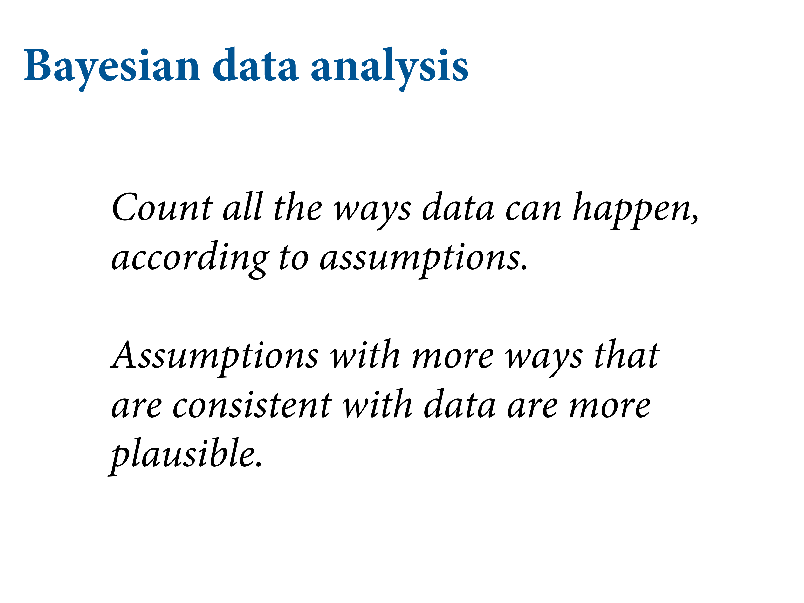

Chapter 1 The Golem of Prague
library(here)
source(here::here("code/scripts/source.R"))slides_dir = here::here("docs/slides/L01")


Figure 1.1: All of these things are complicated processes that aren’t reducible to statistical tests.

Figure 1.2: Most of our statistical tests were designed to measure large effects in statistically controlled experiments. But most of us at the cutting edge of research is much more complicated.

Figure 1.3: This is pure madness. This is no way to prepare people for research. There are no scientific principles here. It’s a real disservice to think this can allow us to understand e.g. the border between India and Pakistan. They’re robots.

Figure 1.4: They’re robots. They’re not particularly clever. They do clever things in narrow ranges of circumstances. But there are a lot of other things they cannot do. They’re terrible at things that children are good at, but good at things we’re terrible at. We have to use them with responsiblity. We can’t trust that they’ll police their own boundaries and behaviour.

Figure 1.5: Take the Golem. Clay robots.

Figure 1.6: Rabbi Judah build a golem. In the legend, he build it to defend the Jews of Prague. But beacsue it takes instructions literally, it does a lot of harm and it needs to be decommissioned. The parable is not to take god’s power of creation. Your models are little golems.

Figure 1.7: Very powerful, but blind to their creator’s intent, so you have to be very careful what you wish for. Statistical models have analogous symmetry. They’re virtual entities made of bits. They’re animated by truth in the sense that we’re trying to discover the true state of nature, in order to make it better. Your ANOVA doesn’t know what you want, and it can wreck Prague. All models are not even false. (George Box). The mistake is that they’re not false or true, they’re just engines. Just robots. Just tools. The real question is how it behaves, and in which contexts are they useful?
![Very powerful, but blind to their creator's intent, so you have to be very careful what you wish for. Statistical models have analogous symmetry. They're virtual entities made of bits. They're animated by truth in the sense that we're trying to discover the true state of nature, in order to make it better. Your ANOVA doesn't know what you want, and it can wreck Prague. All models are not even false. (George Box). The mistake is that they're not false or true, they're just engines. Just robots. Just tools. The real question is how it behaves, and in which contexts are they useful?](slides/L01/10.png)
Figure 1.8: Bayes isn’t how you get the posterior distribution, it’s just about getting the posterior distribution. This is a course about giving you a practical set of tools and the knowledge to use them responsible.
Figure 1.9: When you work on hard problems, you feel consistently confused. You need to have enough confidence to work through the confusion to produce little bits of wisdom to share with your colleagues.


Figure 1.10: They don’t really help you, because each of the robots have very specific operating criteria. You need to be able to build your own robots. You need engineering skills. These tests are little golems - statistical procedures - that think only about randomisation problems with large effects. They’re discussed as if they’re rational entities. They produce inferences, but not decisions. I want to talk you out of the idea that the purpose of a statistical procedure is to falsify a hypothesis. \(P\)

Figure 1.11: Here’s an example why. Statistical models are not hypotheses. Last century, there was a big fight about whether evolution is neutral - most molecular variation had nothing to do with selection. This leads to a mathematical model - neutral equilibrium. To test this, you need another model, a statistical version. You can think about different time scales and frequency histograms. This would be the model on the far right. People did early tests, and it was very hard to reject the hypothesis that evolution is neutral. There’s another class of hypotheses called ‘selection matters’. But there are different ways that it matters, so you have to make multiple process models. The fluctuating selection model creates the exact same predictions as the neutral model. Multiple process models make the same predictions. You don’t realise you’re going to get into trouble if you only use one model. There will be multiple non-null models, and our job is to figure out the difference.
![Here's an example why. Statistical models are not hypotheses. Last century, there was a big fight about whether evolution is neutral - most molecular variation had nothing to do with selection. This leads to a mathematical model - neutral equilibrium. To test this, you need another model, a statistical version. You can think about different time scales and frequency histograms. This would be the model on the far right. People did early tests, and it was very hard to reject the hypothesis that evolution is neutral. There's another class of hypotheses called 'selection matters'. But there are different ways that it matters, so you have to make multiple process models. The fluctuating selection model creates the exact same predictions as the neutral model. Multiple process models make the same predictions. You don't realise you're going to get into trouble if you only use one model. There will be multiple non-null models, and our job is to figure out the difference.](slides/L01/18.png)
Figure 1.12: Most scientists say he’s the only philosopher. Most of his work is not famous. He demarcates what’s science and what isn’t. Confirmation requires having more than one model, and seeing which is consistent with your observations. You need to build a substantive theory that explains what is occurring. In Popper’s theory of falsification, you’re falsifying the explanatory model, not some null model. We should be making predictions about what will be happening, and try to falsify those. Build a substantive research hypothesis with point predictions and falsify those, rather than some null model that nothing’s happening. Because something is always happening. This is nature. Things are correlated. We should expect it. The question is to understand its structure.
![Most scientists say he's the only philosopher. Most of his work is not famous. He demarcates what's science and what isn't. Confirmation requires having more than one model, and seeing which is consistent with your observations. You need to build a substantive theory that *explains* what is occurring.
In Popper's theory of falsification, you're falsifying the *explanatory* model, not some null model. We should be making predictions about what will be happening, and try to falsify those. Build a substantive research hypothesis with point predictions and falsify those, rather than some null model that nothing's happening. Because something is always happening. This is nature. Things are correlated. We should expect it. The question is to understand its structure.](slides/L01/19.png)
Figure 1.13: We will become entry-level golem engineers. We’ll learn the principles of their construction and criticism. Lots of different philosophies and principles.
Figure 1.14: The old-fashioned, continental way of doing statistics. Underdeveloped for centuries because we didn’t have powerful computers. In stats departments, the controversy is over. LaPlace did the most to develop the Bayesian approach. The Jeffreys are physicists. Early proponents for the ressurection of the LePlacian approach.
Figure 1.15: If you could boil it down to one sentence.
Figure 1.16: Multilevel models are models in models. Let’s you deal with really standard problems like missing data, etc.

Figure 1.17: Need to falsify different explanatory models, all of which are credible. Overfitting is the most important concept. Learning to love your data, not the world. Have to work in a way that acknowledges that it’s always happening, and guard against it. Scientists tend to be professional overfitters.